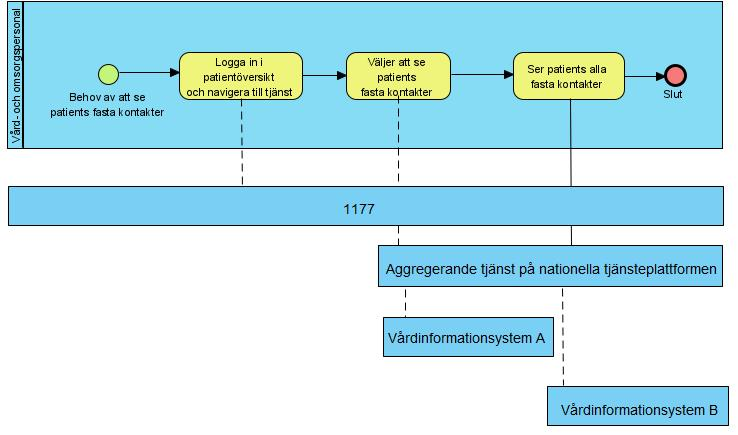
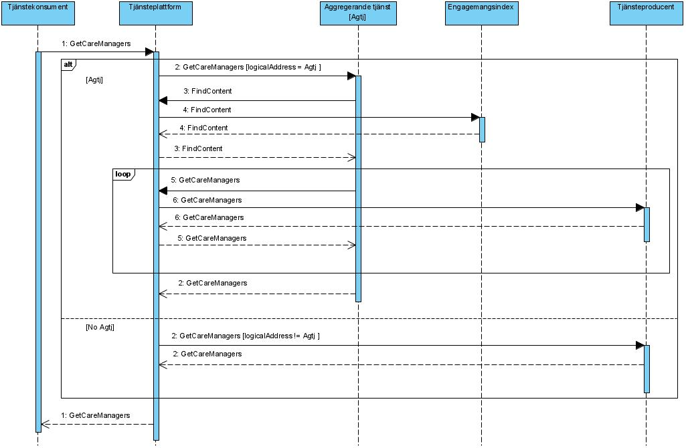
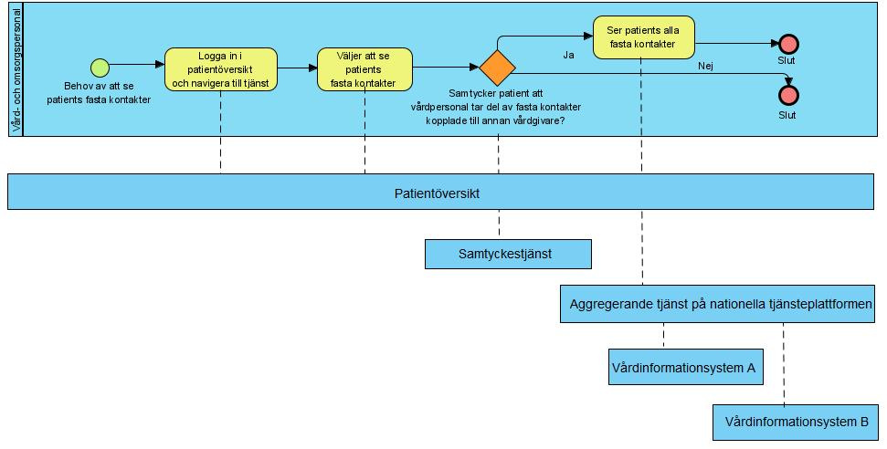
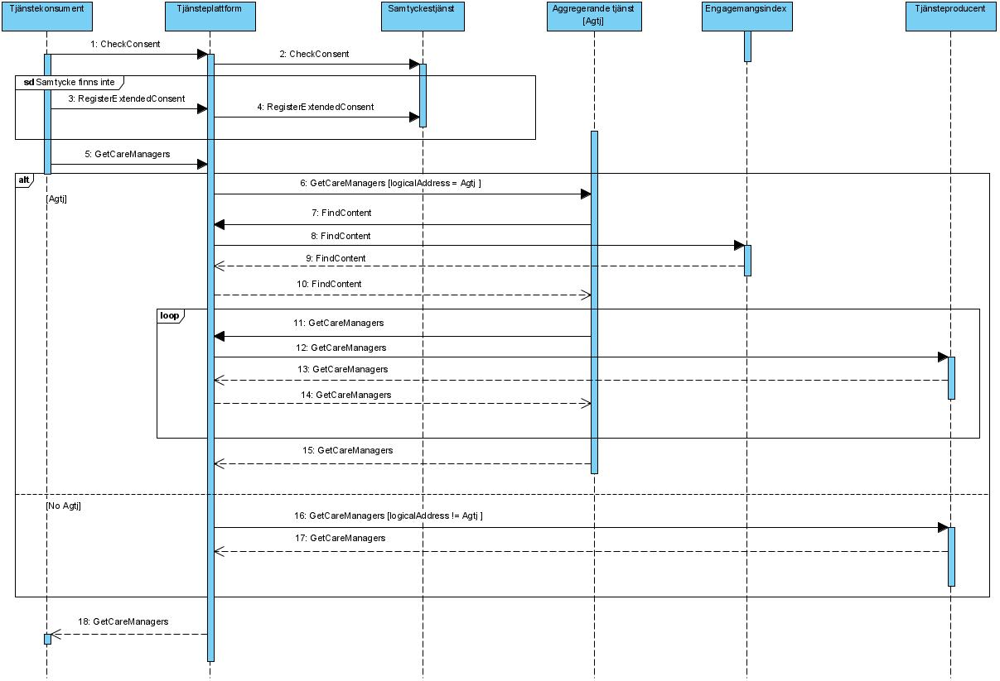

coreprocess: residentparticipation: residentparticipation
1.0.0-rc2 - RC
coreprocess: residentparticipation: residentparticipation - Local Development build (v1.0.0-rc2) built by the FHIR (HL7® FHIR® Standard) Build Tools. See the Directory of published versions
Källa: Tjänstekontraktsbeskrivning för coreprocess: residentparticipation: residentparticipation, version 1.0 RC2 (tagg 1.0_RC2, 2026-06-29), TKB_coreprocess_residentparticipation_residentparticipation.docx.
Tjänstedomänen tillgängliggör information kopplad till patients fasta kontakter. Utgångspunkten för tjänstekontraktet i denna tjänstedomän är i första hand patientens och professionens behov av direktåtkomst till en patients fasta kontakter, sett ur ett nationellt eller ett regionalt perspektiv. I båda fallen är syftet att sammanställa information från det eller de källsystem där det finns information om fasta kontakter via s.k. aggregerande tjänst, snarare än att begära information från ett specifikt system eller en specifik verksamhet.
Tjänstekontraktet erbjuder även möjlighet att nå information från ett specifikt system eller en specifik verksamhet.
Följande flödesmodeller beskriver översiktligt hur tjänstekontraktet är tänkt att användas.
Detta kapitel beskriver de flöden som är relevanta för tjänstedomänen. Beskrivningarna är i form av modeller. För varje flöde finns dels ett arbetsflöde som beskriver vilka steg som ingår i flödet, dels ett sekvensdiagram som tar hänsyn till vilka tjänstekontrakt som nyttjas i de olika stegen.
Flöden:
Flödet beskriver patients tillgång till sina fasta kontakter.

| Namn/beteckning | Beskrivning alt. referens |
|---|---|
| Patient | Den patient som vill få tillgång till sina fasta kontakter. |
| Flödessteg | Beskrivning |
|---|---|
| Logga in i 1177 och navigera till tjänst | Patient som har behov av att se sina fasta kontakter (fasta vårdkontakter och/eller fast läkarkontakt) loggar in i patientportal (exempelvis 1177) med mobilt bankId. Patient navigerar till tjänst(er) som visar patients fasta kontakter. |
| Väljer att se sina fasta kontakter | Patient väljer att se sina fasta kontakter. Patientportal anropar en sammanställande tjänst (aggregerande tjänst) som kan hämta uppgifter om fasta kontakter från olika vårdinformationssystem som håller uppgifter om fasta kontakter |
| Ser alla sina fasta kontakter | Patient får en sammanfattande vy med sina fasta kontakter |

| Namn | Beskrivning |
|---|---|
| Tjänstekonsument | Det system som används för att konsumera information. Dvs det system som använder tjänster enligt ett tjänstekontrakt. Tjänstekonsumenten kan vara en e-tjänst för patient eller e-tjänst för vårdpersonal som stödjer sammanhållen vård- och omsorgsdokumentation. |
| Tjänsteplattform | Tjänsteplattformen är det lager som hanterar virtuella tjänster, aggregerande tjänster samt anpassningstjänster. |
| Aggregerande tjänst | En aggregerande tjänst är en integrationstjänst som för en tjänstekonsument sammanställer en nationell vy av informationen av den typ som är aktuell för tjänsten i fråga. Är beroende av engagemangsindex för att begränsa sökningen till relevanta informationsägare. |
| Engagemangsindex | En tjänst där det finns uppdaterade nationella index över vilka informationsägare som har information kring en viss invånare/patient. |
| Tjänsteproducent | Det system som i detta fall utgör källsystemet som vårdpersonal direkt registrerar/uppdaterar/raderar information i. |
Flödet beskriver vård- eller omsorgspersonals tillgång till patients fasta kontakter..

| Flödessteg | Beskrivning |
|---|---|
| Vårdpersonal | Den vård- eller omsorgsperson som vill få tillgång till patientens fasta kontakter. |
| Namn/beteckning | Beskrivning alt. referens |
|---|---|
| Logga in i patientöversikt och navigera till tjänst | Vård- och omsorgsperson loggar in i patientöversikt via sitt tjänstekort. |
| Väljer att se patients fasta kontakter. | Vård- och omsorgsperson söker efter patient som vård- och omsorgspersonal har en vård- eller omsorgsrelation till. |
| Samtycker patient att vårdpersonal tar del av fasta kontakter kopplade till annan vårdgivare | Tjänst för patientöversikt kontrollerar om patient tidigare givit samtycke för att vård- eller omsorgspersonal i sitt aktuella uppdrag ska få ta del av fasta kontakter kopplade till annan vårdgivare (enligt lagen om sammanhållen vård- och omsorgsdokumentation). / Om inget samtycke finns sedan tidigare frågar tjänst för patientöversikt vård- eller omsorgspersonalen om att efterfråga samtycke från patient (eventuell nödöppning eller beslut om mognadsbedömning kan också ge vård- eller omsorgspersonal möjlighet att ta del av patients fasta kontakter). |
| Ser patients alla fasta kontakter | Vård- eller omsorgspersonal tar del detaljer om patients fasta kontakter. |

| Namn | Beskrivning |
|---|---|
| Tjänstekonsument | Det system som används för att konsumera information. Dvs det system som använder tjänster enligt ett tjänstekontrakt. Tjänstekonsumenten kan vara en e-tjänst för patient eller e-tjänst för vårdpersonal som stödjer sammanhållen vård- och omsorgsdokumentation. |
| Tjänsteplattform | Tjänsteplattformen är det lager som hanterar virtuella tjänster, aggregerande tjänster samt anpassningstjänster. |
| Aggregerande tjänst | En aggregerande tjänst är en integrationstjänst som för en tjänstekonsument sammanställer en nationell vy av informationen av den typ som är aktuell för tjänsten i fråga. Är beroende av engagemangsindex för att begränsa sökningen till relevanta informationsägare. |
| Samtyckestjänst | Tjänst som håller patienters givna samtycken till vårdgivare/vårdenhet. Se tjänstedomän för samtyckeshantering informationsecurity:authorization:consent för vidare information om dess tjänstekontrakt, ref [R8]. |
| Engagemangsindex | En tjänst där det finns uppdaterade nationella index över vilka informationsägare som har information kring en viss invånare/patient. |
| Tjänsteproducent | Det system som i detta fall utgör källsystemet som vårdpersonal direkt registrerar/uppdaterar/raderar information i. |
Domänen innehåller endast ett (1) tjänstekontrakt. Tjänstekontraktet är obligatoriskt i de två flödena specificerade ovan.
Tjänstedomänen tillämpar källsystem-adressering. Observera att tjänstekonsumenter främst anropar aggregerande tjänster.
Tjänstekonsumenten adresserar den aggregerande tjänsten med antingen nationellt HSA-id (Ineras HSA-id) eller HSA-id för aktuell huvudman om det är en regional- eller huvudmanna-specifik (t.ex. ”regional”) aggregerande tjänst som ska adresseras.
Det finns också fall då en tjänstekonsument adresserar ett specifikt källsystem. Det förutsätter att tjänstekonsumenten känner till källsystemets HSA-id (den logiska adressen). Det kan exempelvis ske genom att ett sådant anrop föregås av ett anrop till en aggregerande tjänst (källsystemets HSA-id finns då i svarsmeddelandet) rörande en patients information i ett specifikt källsystem.
Adressering sker i enlighet med RIV Tekniska Anvisningar Översikt, Rev PD2, avsnitt 8.3 (referens [R2]), där mer information kan hittas.
Det behövs en aggregerande tjänst för tjänstekontraktet som läser data i denna domän (GetCareManagers).
Aggregerande tjänster har samma tjänstekontrakt och anropsadress som en traditionell virtuell tjänst, men nås via olika logiska adresser.
Om ett källsystems HSA-id anges som logisk adress, kommer frågemeddelandet att dirigeras vidare direkt till källsystemet av tjänsteplattformen utan att passera en aggregerande tjänst.
Om logisk adress är HSA-id för Inera eller en huvudman kommer anropet att dirigeras till aggregerande tjänsten som i sin tur – efter att ha konsulterat engagemangsindex – vidarebefordrar frågan till de källsystem som har information om patienten.
| Åtkomstbehov för patientens fasta kontakter | Logisk adress |
|---|---|
| Nationellt | Ineras HSA-id: 5565594230 |
| För en huvudman/region | Huvudmannens/regionens HSA-id |
| För ett källsystem | Logisk adress som källsystemet förväntas kunna adresseras genom, enligt tjänsteadresseringskatalogen i anropad tjänsteplattform. / Observera att värdet för logisk adress inte nödvändigtvis alltid har samma värde som källsystemets HsaId (så som uttryckt i källsystemets servercertifikat). / Se T-bokens styrande principer – IT4 - Lös koppling (loose coupling) & interoperabilitet, ref [R9]. |